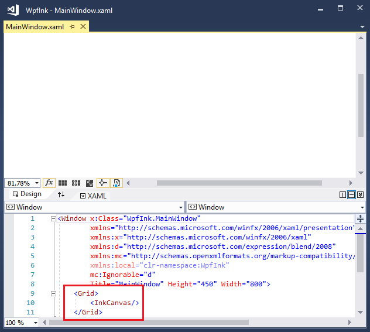
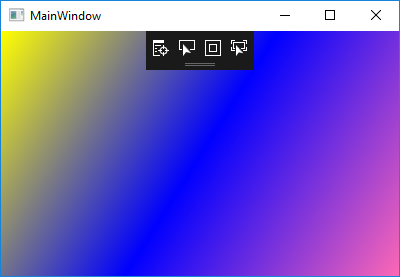

Начало работы с рукописными данными в WPF
Windows Presentation Foundation (WPF) есть функция рукописного ввода, которая позволяет легко внедрить рукописный ввод в приложение.
Предварительные требования
Чтобы использовать в следующих примерах, сначала нужно установить Microsoft Visual Studio. Полезно также знать способы написания базовых приложений WPF. Помощь по началу работы с WPF, см. в разделе Пошаговое руководство: Создание первого классического приложения WPF.
Быстрый запуск
Этот раздел поможет написать простое приложение WPF, сбора данных рукописного ввода.
У вас есть рукописного ввода?
Создание приложения WPF с поддержкой рукописного ввода:
Запустите Visual Studio.
Создайте новый приложение WPF.
В новый проект диалоговом окне разверните установленные > Visual C# или Visual Basic > Windows Desktop категории. Выберите приложение WPF (.NET Framework) шаблон приложения. Введите имя, а затем выберите ОК.
Visual Studio создает проект, и MainWindow.xaml откроется в конструкторе.
Тип
<InkCanvas/>между<Grid>теги.
Нажмите клавишу F5 для запуска приложения в отладчике.
С помощью пера или мышь, писать Здравствуй, мир в окне.
Вы написали рукописный эквивалент приложения на «hello world» с помощью всего 12 клавиш!
Оживить приложения
Рассмотрим преимущества некоторых функций WPF. Замените весь код между открывающим и закрывающим <окна > теги, используя следующую разметку:
<Page>
<InkCanvas Name="myInkCanvas" MouseRightButtonUp="RightMouseUpHandler">
<InkCanvas.Background>
<LinearGradientBrush>
<GradientStop Color="Yellow" Offset="0.0" />
<GradientStop Color="Blue" Offset="0.5" />
<GradientStop Color="HotPink" Offset="1.0" />
</LinearGradientBrush>
</InkCanvas.Background>
</InkCanvas>
</Page>
Этот XAML создает градиентный фон поверхности рукописного ввода.

Добавление кода программной части XAML
Хотя XAML позволяет очень легко разрабатывать пользовательский интерфейс, любой реальных приложений необходимо добавить код для обработки событий. Ниже приведен простой пример увеличения рукописный ввод в ответ на щелчок правой кнопкой мыши.
Задайте
MouseRightButtonUpобработчика в вашей XAML:<InkCanvas Name="myInkCanvas" MouseRightButtonUp="RightMouseUpHandler">В обозревателе решений, разверните файл MainWindow.xaml и откройте файл с выделенным кодом (MainWindow.xaml.cs или MainWindow.xaml.vb). Добавьте следующий код обработчика событий:
private void RightMouseUpHandler(object sender, System.Windows.Input.MouseButtonEventArgs e) { Matrix m = new Matrix(); m.Scale(1.1d, 1.1d); ((InkCanvas)sender).Strokes.Transform(m, true); }Warning
It looks like the sample you are looking for does not exist.
Запустите приложение. Добавьте рукописные и щелкните правой кнопкой мыши, с помощью мыши или эквивалента нажатие и удерживание с помощью пера.
Отображение увеличивает каждый раз, когда щелчком правой кнопки мыши.
Используйте процедурный код вместо XAML
От процедурного кода доступны все возможности WPF. Выполните следующие действия, чтобы создать приложение «Hello Ink World» для WPF, не использующего любого XAML.
Создайте новый проект консольного приложения в Visual Studio.
В новый проект диалоговом окне разверните установленные > Visual C# или Visual Basic > Windows Desktop категории. Выберите консольное приложение (.NET Framework) шаблон приложения. Введите имя, а затем выберите ОК.
Вставьте следующий код в файле Program.cs или Program.vb:
using System; using System.Windows; using System.Windows.Controls; class Program : Application { Window win; InkCanvas ic; protected override void OnStartup(StartupEventArgs args) { base.OnStartup(args); win = new Window(); ic = new InkCanvas(); win.Content = ic; win.Show(); } [STAThread] static void Main(string[] args) { new Program().Run(); } }Warning
It looks like the sample you are looking for does not exist.
Добавьте ссылки на сборки PresentationCore, PresentationFramework и WindowsBase, щелкнув правой кнопкой мыши ссылки в обозревателе решений и выбрав добавить ссылку на.

Постройте приложение, нажав клавишу F5.